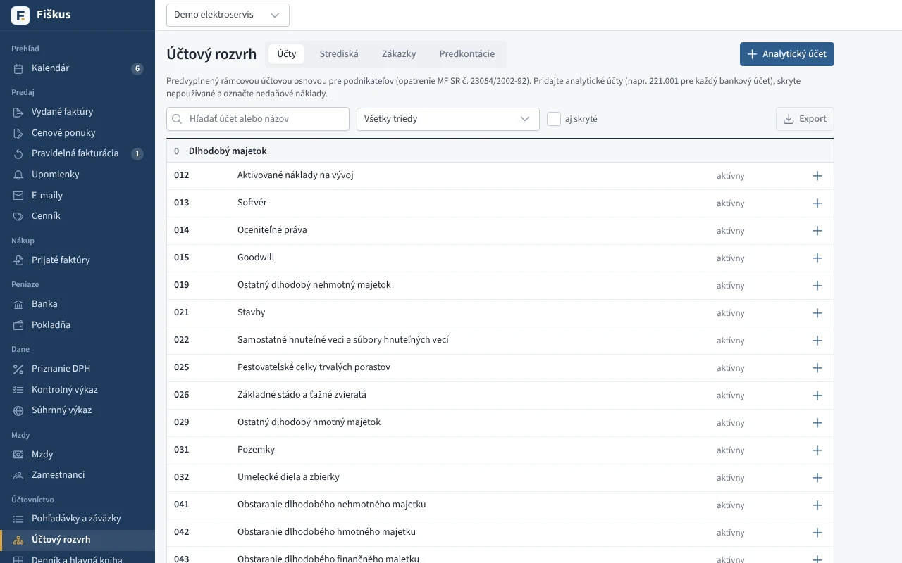
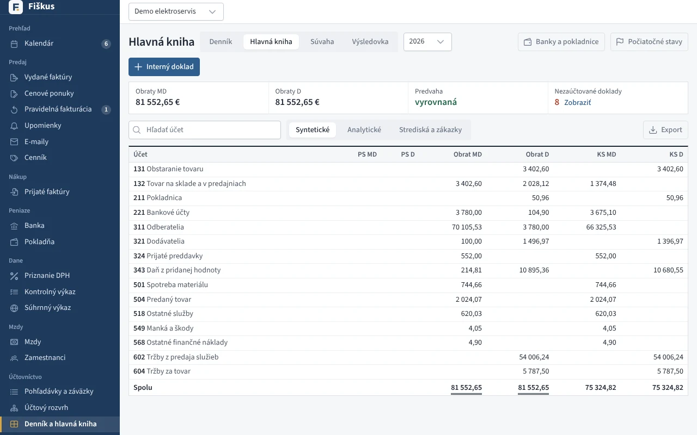
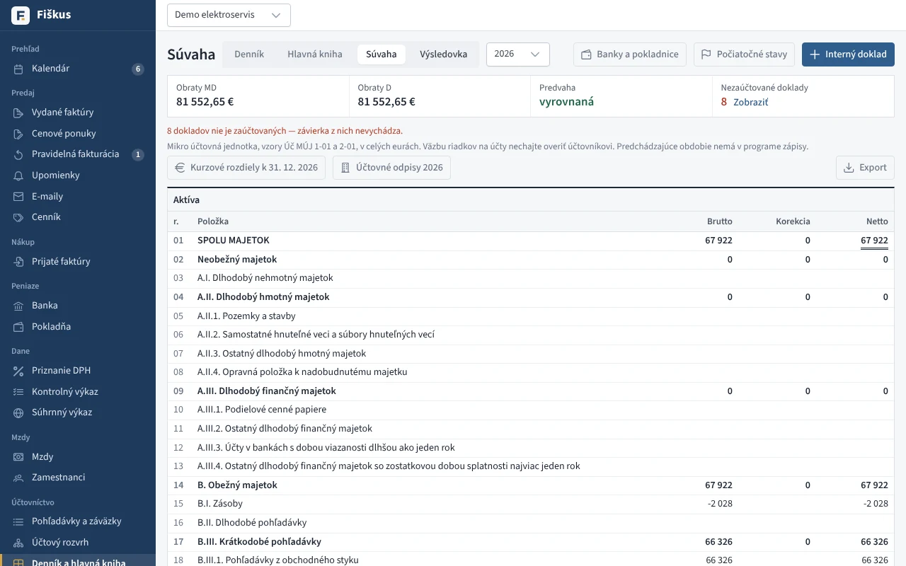
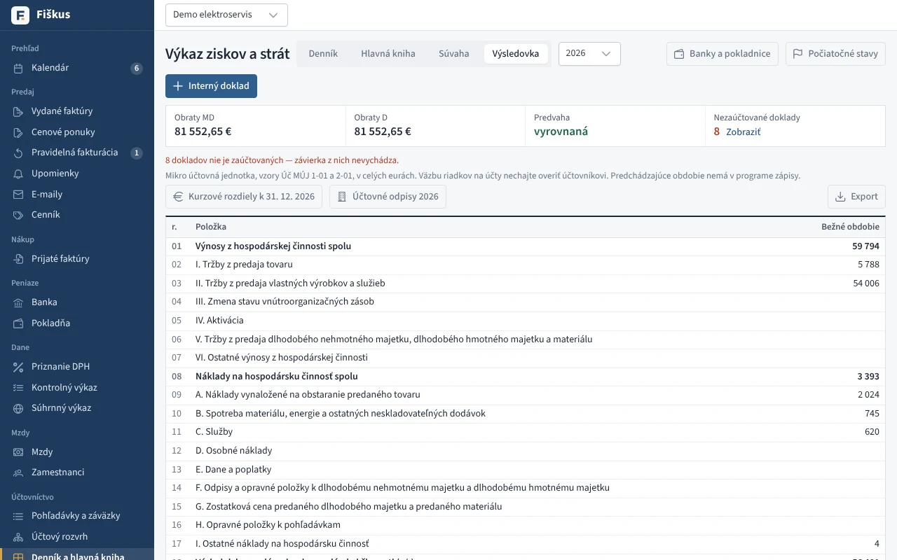
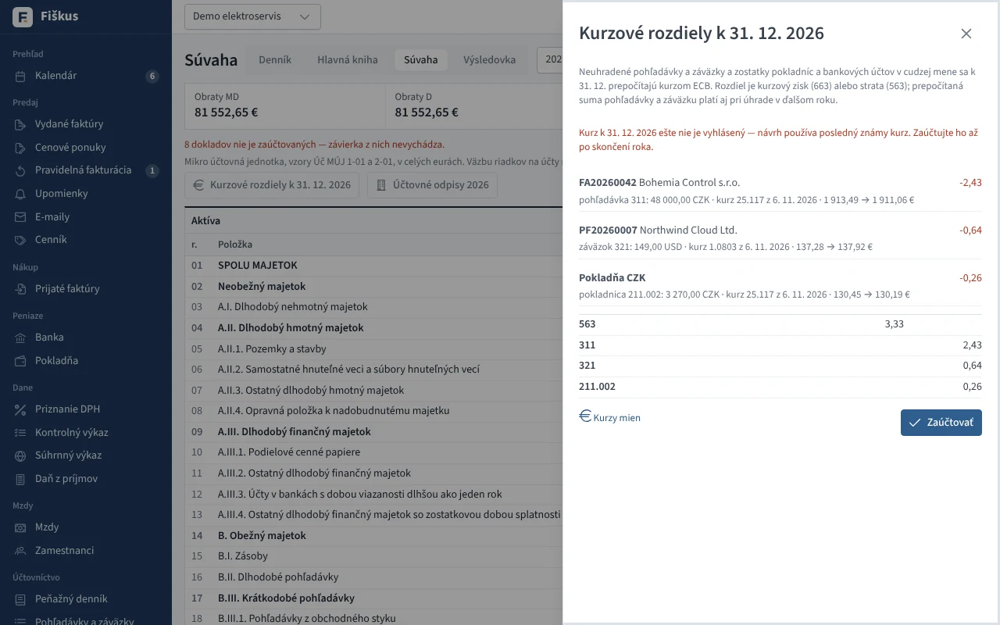

Podvojné účtovníctvo¶
Účtový rozvrh a predkontácie¶
Rámcová účtová osnova pre podnikateľov (syntetické účty, druh, nedaňové náklady), analytické účty firmy, strediská a zákazky. Predkontácie sú vzory zaúčtovania — ktorý účet ide na MD, ktorý na D a akú časť sumy (základ, DPH, celok). Fiškus má predvolené vzory pre bežné doklady a stráži, aby každý vzor bol vyrovnaný (MD = D).


Automatické účtovanie¶
 Účtovný denník — doklady zaúčtované automaticky podľa predkontácií
Účtovný denník — doklady zaúčtované automaticky podľa predkontácií
| Doklad | Napríklad |
|---|---|
| vydaná faktúra | 311 / 602 (služby) alebo 604 (tovar) a 343 |
| prijatá faktúra | 501 a 343 / 321 |
| bankový pohyb | 221 / 311 |
| pokladničný doklad | 211 / … |
| skladový doklad | 132 / 131, 504 / 132 — pozri ocenenie zásob |
Každý zápis sa dá zmeniť (iná predkontácia, stredisko, zákazka) a pridať sa dajú ručné zápisy a interné doklady.
Knihy a závierka¶






- Účtovný denník — zápisy v časovom poradí.
- Hlavná kniha — obratová predvaha, obraty a zostatky účtov.
- Kurzové rozdiely pri úhrade v cudzej mene (aj pri čiastočných úhradách z eurového účtu) a k 31. 12.
- Závierka mikro účtovnej jednotky — súvaha (Úč MÚJ 1-01) a výkaz ziskov a strát (Úč MÚJ 2-01); počiatočné stavy z konečných stavov minulého roka.
Kurzové rozdiely k 31. 12.¶
V Súvahe kliknite na Kurzové rozdiely k 31. 12. Fiškus prepočíta kurzom ECB k 31. 12. všetko, čo je v cudzej mene:
- neuhradené pohľadávky a záväzky (311, 321). Prepočítaná suma platí aj pri úhrade v ďalšom roku,
- pokladnice v cudzej mene. Zostatok v mene je súčet dokladov, suma v účtovníctve je súčet dokladov v eurách (kurz ku dňu dokladu). Od ďalšieho roka sa začína prepočítanou sumou,
- bankové účty v cudzej mene. Pohyby v cudzej mene sa účtujú ručne v eurách na analytický účet banky, preto suma v účtovníctve je zostatok tohto účtu v hlavnej knihe. Zostatok v mene je súčet pohybov vo Fiškuse. Ak sa líši od výpisu (napríklad účet bol založený pred používaním Fiškusa), zadajte do riadku Zostatok podľa výpisu k 31. 12. sumu z výpisu.
Rozdiel je kurzový zisk (663) alebo strata (563) proti účtu pohľadávky, záväzku, pokladnice alebo banky. Pokladnice a banky sa účtujú na ich analytické účty z Účty bánk a pokladníc. Bankový účet v cudzej mene bez analytického účtu alebo s nezaúčtovanými pohybmi Fiškus nepreráta a upozorní na to. Zaúčtovať vytvorí interný doklad k 31. 12. Ďalšie zaúčtovanie ho nahradí, takže po doplnení kurzu alebo pohybov stačí kliknúť znova.


Úloha: od faktúry k súvahe
V ukážkovej firme prepnite druh účtovníctva na podvojné. Nájdite jednu vydanú faktúru v účtovnom denníku, sledujte jej zápis na účte 311 v hlavnej knihe a potom jej úhradu z banky. Kde sa pohľadávka objaví v súvahe, ak úhrada príde až v januári?